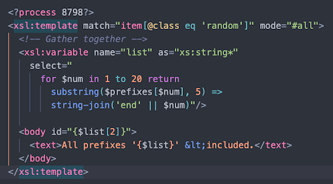
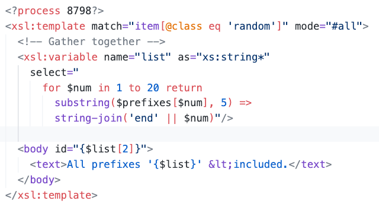
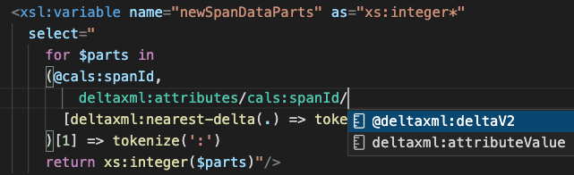
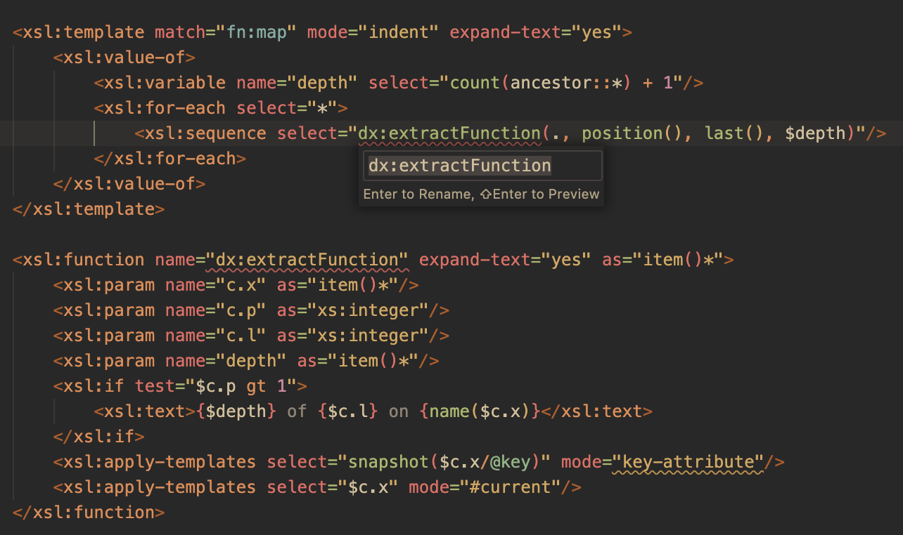
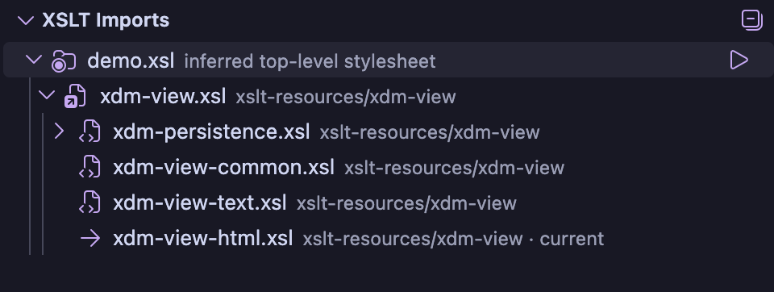

Editing XSLT/XPath
With DeltaXignia's XSLT/XPath extension , Visual Studio Code is now a fully featured XSLT 3.0 editor. Standalone XPath 3.1 files are also fully supported. Visual Studio Code's rich ecosystem is now available to XSLT and XPath developers.
Comprehensive, but language-neutral, descriptions of Visual Studio Code can be found in Microsoft's Visual Studio Code User Guide. Links to key sections are below:
- Keyboard shortcuts
- Multiple selections (multi-cursor)
- Find and Replace
- File encoding support
- Emmet (snippet abbreviations)
The documentation here focuses on XSLT and XPath language features. More general XML features are covered on the Editing XML page. Help on navigating code in the editor is provided in the Code Navigation page.
Syntax Highlighting
Eva Dark Theme

For improved performance and precision, this extension avoids using the default but problematic TM Grammar. Instead we use Visual Studio Code's Semantic Highlighting introduced in 2020. For color themes extensions you should explicitly enable Semantic Highlighting. See the Settings page for more information.
Github Light Theme

The extension provides syntax highlighting for XSLT instructions, XML Literal Result Elements, XML attributes, XML character references, CDATA sections and all tokens within XPath expressions. XPath expressions within Attribute Value Templates (AVTs) and Text Value Templates are syntax highlighted also.
XSLT/XPath Dark Color Themes
The plethora of VS Code themes will highlight XSLT/XPath very well using Semantic Highlighting fallbacks for language-specific tokens. There is however a XSLT Dark Themes extension that enhances a set of popular dark themes specifically for XSLT and XPath:
- Darcula From IntelliJ
- Gruvbox Material Dark
- Iceberg
- Nord
- Tokyo Night Storm
- Zen
Formatting
Two commands are provided for formatting XML, XSLT or XPath expressions:
- Format Document (⇧⌥F) - Format the entire active file.
- Format Selection (⌘K ⌘F) - Format the selected content.
- Format on Save - Optionally specify to format only modifications.
As well as explicitly invoking commands, formatting can be triggered as you type, when you save a file, or when you paste content from the clipboard. The following settings control this:
editor.formatOnType- Controls indentation for new lines.editor.formatOnSave- Controls indentation for new lines.editor.formatOnPaste- Controls indentation for new lines.editor.editor.formatOnSaveMode- modifications setting, only formats code changes on save.
The XPath formatter indents code blocks within {}, [] and () bracket-pairs.
Indentation is also adjusted for if/else blocks and range-variable blocks.
Folding
Folding with this extension uses indentation to determine fold regions.
To set a region code-folding block, surround it with <?region?> and <?endregion?> processing instructions.
You may optionally include a label for the processing instructions, for example:
<?region modeA?>
...
<?endregion modeA?>
For more detail and a full list of Folding-related actions see the Folding section in Visual Studio Code's User Guide.
Intellisense (Auto Complete)
Intellisense suggestions include all in-scope XSLT and XPath symbols from xsl:accumulator names
to xsl:variable names, to anonymous XPath function parameters. There is intellisense
also for XSLT and XPath functions - help for built-in functions is shown alongside the suggestions list. Symbols from
included/imported files are included in the suggestions list.
Hover Help and Signature Help
Hovering over a function call shows the function's signature and description. This works for
built-in functions, with a link to the function's definition in the W3C specification, and for user-defined
xsl:functions, including those in included and imported stylesheets. Hovering over the name of an
xsl:call-template shows the named template's parameters.
While typing the arguments of a function call, signature help (parameter hints) shows the function's
parameters, with the current parameter highlighted. Signature help is also shown for the
xsl:with-param children of an xsl:call-template. Signature help can be triggered
manually with ⇧⌘Space.
In an XSLT 4.0 stylesheet, a documentation note on a function or template is included in its hover help and signature help.
Intellisense for XPath Locations
An XML source file is used for context to provide XML node-names when editing XPath location steps. This is initially the last non-XSLT file opened in Visual Studio Code. When the context file is set, the status-bar for the XSLT file editor will show the context filename. The label: [auto-completion context] is shown if the context file has not been set.
Locking the context file
To lock the auto-completion context file to a specific file, click on the status-bar item for the context file. You can then select from the list of recently opened XML files or pick a different file using the system's file explorer dialog.

Variables and XPath Locations
XPath is evaluated as you type so node-names in the auto-completion list are filtered to be just those that are possible given previous XPath steps such as axes and node-name tests. If an XPath location expression starts with a variable that also contains an XPath location, that context from that variable is also used to limit the node-names shown in the auto-completion list.
Triggering the auto-complete list
For XSLT intellisense, the < character triggers suggestions. XSLT instruction suggestions fit the context of the cursor location. On accepting a suggestion a Code Snippet is inserted which will include common attributes for the selected instruction.
Intellisense is manually triggered with ⌃Space, with Tab or Enter used to accept suggestions. These key bindings are fully customizable.
XPath Expressions and Operators
At the start of an XPath expression, the suggestions include snippets for the expressions with several
parts: for, let, some, every, if,
map and array - for example, let $x := … return …, with
placeholders for each part.
After an operand, such as a variable or a closing bracket, only the keyword operators that can follow are
suggested, such as cast as, instance of and union - and
return or satisfies within a for, let,
some or every expression. Short operators such as and,
eq and div are quicker to type, so aren't included.
Parameters for xsl:call-template
Typing < within an xsl:call-template suggests an
xsl:with-param for each of the called template's parameters that isn't passed yet, for
example xsl:with-param colour, which inserts the parameter name. The same applies to the
parameters of the enclosing xsl:iterate within an xsl:next-iteration. The
name attribute of an xsl:with-param also offers the parameter names.
XSLT Instruction Snippets
The special xsl:stylesheet suggestion includes a boiler plate 'identity transform' stylesheet complete with namespace
declarations.
The xsl:message suggestions include snippets that use the xdm:debug() function to
show the names and values of in-scope variables and parameters - see Debugging.
More Snippets
You can define your own snippets in Visual Studio Code in a declarative way, without writing an extension. See the Visual Studio Code documentation: Create your own snippets.
Emmet Snippets provide a useful shorthand for inserting literal result elements. They can be enabled for XSLT in Visual Studio Code Settings.
Bracket Matching
Matching brackets in XPath expressions are highlighted when the cursor is near one of them. You can jump to the matching bracket with ⇧⌘\
Symbol Renaming
The Rename Symbol command F2 (available in the context-menu) updates all in-scope usages of the symbol - across all imported stylesheet modules. Press ⇧Enter to preview the updates or Enter to perform updates immediately.
Code Refactoring
Code refactoring features are provided via VS Code's Quick Fix (⌘.) feature and the Refactor command:
- Extract xsl:function - from selected XSLT instructions or a selected XPath expression
- Extract xsl:template - from selected XSLT instructions
- Extract xsl:variable - from a selected XPath expression
- Wrap with... (⌥⇧W) - wraps the selected instructions, or the element whose
start tag is at the cursor, in an instruction such as
xsl:if,xsl:chooseorxsl:for-each, or a literal result element - chosen from a list of the instructions allowed at that point, with the recently used ones first. The selected lines are indented within the new instruction, and the cursor is placed in its first attribute, such astestorselect - Extract record type and Use record type - XSLT 4.0, for a map constructor
or
xsl:map, see Records and Enums - Add documentation note - XSLT 4.0, with the cursor on the start tag of an
xsl:functionorxsl:template, see Documentation Notes
An available refactoring for a selection is indicated by a light-bulb💡 adjacent to the selection. Clicking on the 💡 will display the available refactorings. The light-bulb is only shown when the code selection is a valid expression or a set of XSLT instructions that would be valid inside the new component. If you don't see the light-bulb when you expect to, check that the code selection completely encloses the XSLT instruction or XPath expression.
The name of an extracted new component should be changed with the Rename Symbol feature, this is automatically triggered when the new component is added.
After refactoring, the XSLT is updated to fix any context problems introduced when code is moved.
The new component has xsl:param instructions added to provide context-properties required.
For extract to xsl:function two modes are available (fully documented here):
- full refactoring - fixes 'missing-context' problems by updating XSLT to reference the context-property parameters.
- partial refactoring - highlights 'missing context' problems in the XSLT.

Quick Fixes
Some problems reported by the linter have a Quick Fix, shown with the 💡 light-bulb when the cursor is on the problem:
- include XSLT module for xdm:debug - for the
xdm:debug()function used inxsl:message, see Debugging - Add missing record fields - for a map constructor or
xsl:mapwithout all the required fields of its record type - Add missing xsl:when cases - for an
xsl:switchon an enumeration type that doesn't test all its values - Remove duplicate enum value - for an enumeration type with a duplicate value
- Add missing @param - for a documentation note without an
@paramfor each parameter
XSLT Linter
The XSLT/XPath linter performs checks on your code as you type, performing symbol reference tests across all included modules. Any problems are shown in the Problems Panel and also highlighted inline with a squiggly underline for the specific token at issue.
Checks made by the linter
- XML Syntax
- XSLT/XPath Variable name references
- XSLT/XPath Parameter name references
- All other symbol name references (
xsl:accumulatorxsl:keyetc.) - Function name and arity (number of params)
xsl:with-paramnames- File locations in
xsl:importxsl:includexsl:use-package - Order of operators/operands in XPath
- Matching of brackets in XPath
- Presence of the context-item for expressions where it is required
- XSLT instructions and their attributes
- Duplicate global symbol names
- Attribute Value Template Syntax
- Text Value Template Syntax
- Item types on
asattributes of XSLT instructions - Accumulator names in
use-accumulatorsattributes, and accumulators not used by anyuse-accumulatorsattribute - Operators in patterns -
or,and,eqor,outside a predicate or function call, for examplematch="a or b"instead ofmatch="a | b" - Duplicate keys in map constructors and in the
xsl:map-entrychildren of anxsl:map - Braced URI literals, for example
Q{http://example.com}name - The order of
xsl:param,xsl:on-completionandxsl:next-iterationwithinxsl:iterate - XSLT 4.0: record and enumeration types, see Records and Enums
- XSLT 4.0: the
@paramtags of documentation notes, see Documentation Notes
Inferred Imports for 'Non-Standalone' Stylesheets
Non-standalone XSLT stylesheet modules have missing imports because they are imported by a parent module that declares the required imports. If no knowledge of the parent module is available, spurious problems can be reported. In such cases, the spurious problems are annoying and may obscure reported problems that are actually relevant.
The Inferred Imports feature prevents spurious problems being highlighted in the editor. With this feature, the top-level ('parent') stylesheet that imports or includes the active module, directly or indirectly, is found and imported along with any other imports. Functions, variables etc. used in the active module, but declared in modules that only the parent imports, can therefore be resolved.
A parent stylesheet opened recently in Visual Studio Code is used first. Otherwise, the parent is found from the workspace's
XSLT files, which are scanned in the background the first time they're needed, so the parent doesn't have to be opened
first. The scan only reads the href attributes of xsl:import and xsl:include
instructions, and is kept up to date as files change. Where a module is imported by more than one stylesheet, the one in the
nearest folder is used. The workspace scan can be turned off with the XSLT.resources.inferParentFromWorkspace
setting.
The XSLT Imports view
The XSLT Imports view in the Explorer shows, for the XSLT module in the active editor, its top-level stylesheet - marked inferred when it was found from the workspace - with its tree of imports and includes. The tree is expanded down to the active module, which is marked current, and clicking a module opens it. The tooltip for a module lists any other stylesheets that import or include it.

Unused Variables
The Code Checker detects unused variables and parameters declared in either XSLT or XPath expressions. These are highlighted by being 'grayed out' in the editor. Global variables are shown as unused if they are not referenced in the current file, the 'unused' state is not affected by imported stylesheets they may reference the same variable.
Compile-time and Run-time problems
The Code Checking feature is designed to find most basic code problems due to typos or changes to referenced symbols. When XSLT is run, an attempt is made to parse error messages from the Saxon XSLT processor (shown in the Task tab of the Terminal View) so that the problem token is highlighted, and the error message is shown in the Problems View.
You can quickly create a new XSLT file when adding a xsl:import, xsl:use-package or xsl:include XSLT instruction. Simply enter the file path
in the href, press ⌘+click and then, in the 'Unable to Open...' dialog press the Create File button.
Auto tag-close
Element tags are auto-closed when typing </ when an element is unclosed.
Note that this feature is only enabled when the VS Code user-setting
GitHub Copilot
New GitHub Copilot features continue to enhance the XSLT editing experience. See the VS Code GitHub Copilot documentation for information on edit suggestions and using Copilot Chat in VS Code. For a summary of selected features that are enhanced by the XSLT/XPath extension, see the GitHub Copilot and XSLT page .